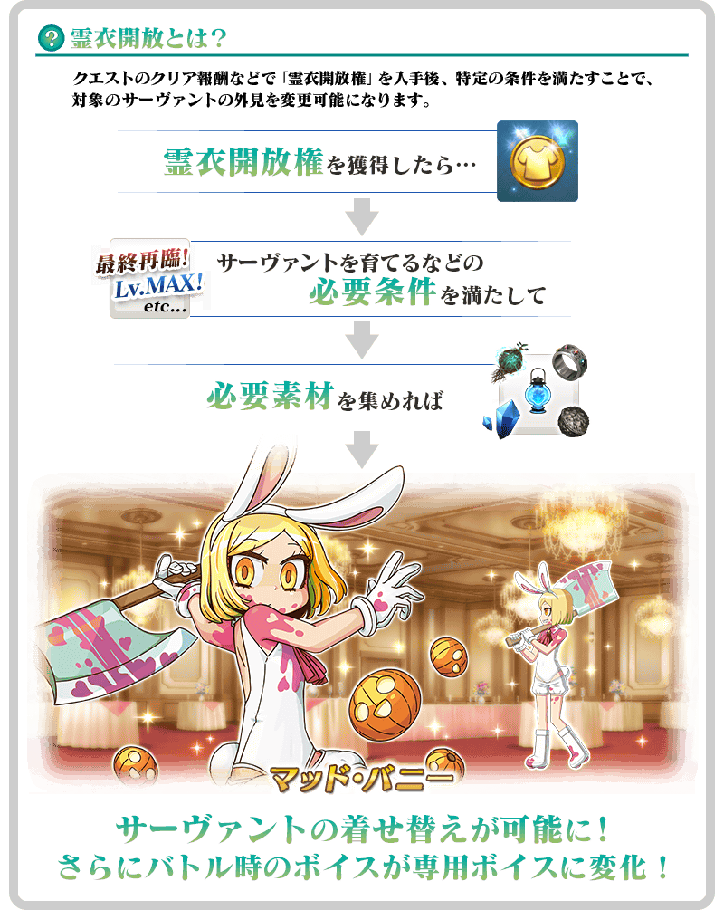
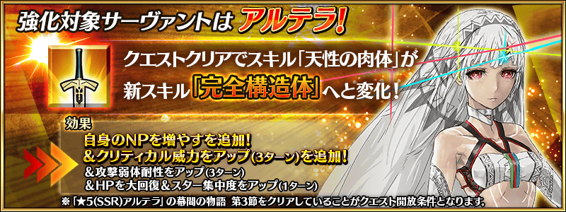
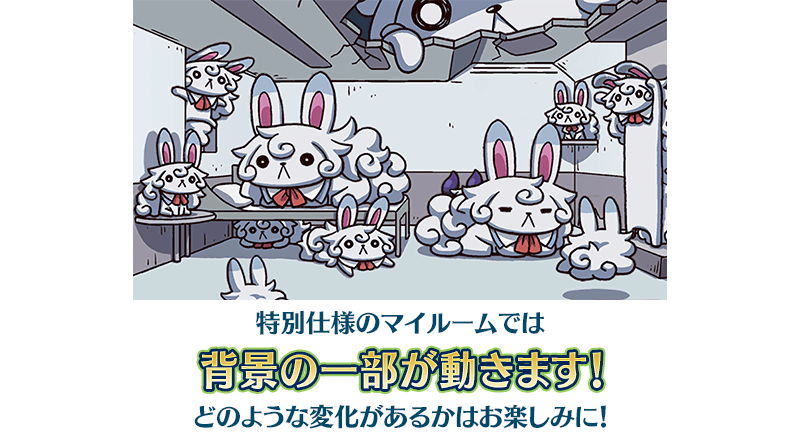

配合預定在2022年4月下旬開幕的「看漫畫了解！Fate/Grand Order×Fate/Grand Order聯動活動」，舉辦「看漫畫了解！Fate/Grand Order×Fate/Grand Order聯動活動開幕前夕宣傳活動」！
◆宣傳活動舉辦期間◆
2022年4月20日(三) 17:00～5月4日(三) 11:59
※本頁面皆為開發中圖片。會有與實際圖片相異的情況。 ※在2018年12月31日(二) 23:00以後新配信的主線故事及期間限定活動、一部份關卡、宣傳活動及召喚中，會顯示隱藏真名的對象從者真名。
為了記念「看漫畫了解！Fate/Grand Order×Fate/Grand Order聯動活動」的開幕，實施特別登入獎勵。
在下述的期間中登入7次(1天算1次)的話，贈送最多白銀果實2個、黃金果實2個、聖晶石3個！
◆舉辦期間◆
2022年4月21日(四) 3:00～5月5日(四) 2:59
※在舉辦期間內合計登入7天的話，可領取所有的登入獎勵。
◆贈送對象◆
2022年5月4日(三) 2:59前通過「特異點F 炎上汙染都市 冬木」的御主對象
※上述時間前，在管理室(ターミナル)畫面的關卡橫幅必須要有「CLEAR」的文字顯示。
◆登入獎勵內容◆
| 登入次數 | 贈送內容 | |
|---|---|---|
| 第1次 |

|
白銀果實 1個 |
| 第2次 |

|
黃金果實 1個 |
| 第3次 |

|
聖晶石 1個 |
| 第4次 |
|
白銀果實 1個 |
| 第5次 |
|
黃金果實 1個 |
| 第6次 |
|
聖晶石 1個 |
| 第7次 |
|
聖晶石 1個 |
※登入獎勵會在每天3:00配發。 ※合計7天內能領取，但根據成為贈送對象的時間點，可能無法到此上限。
在迦勒底之門內每日出現的關卡「蒐集種火」的消耗AP以期間限定變成1/2！(就算在戰鬥中撤退的情況，也會是同様的消耗量)
◆舉辦期間◆
2022年4月20日(三) 17:00～5月4日(三) 11:59
◆對象關卡◆
・蒐集種火
週一 蒐集種火<殺・槍篇>初級、中級、上級、超級、極級
週二 蒐集種火<騎・劍篇>初級、中級、上級、超級、極級
週三 蒐集種火<術・弓篇>初級、中級、上級、超級、極級
週四 蒐集種火<槍・殺篇>初級、中級、上級、超級、極級
週五 蒐集種火<劍・騎篇>初級、中級、上級、超級、極級
週六 蒐集種火<弓・術篇>初級、中級、上級、超級、極級
週日 蒐集種火<隨機篇>初級、中級、上級、超級、極級
【蒐集種火 關卡的難易度等】
| 難易度 | 推薦Lv | 消耗AP |
|---|---|---|
| 初級 | 5 | 10→5 |
| 中級 | 10 | 20→10 |
| 上級 | 25 | 30→15 |
| 超級 | 40 | 40→20 |
| 極級 | 60 | 40→20 |
下述的期間中，在進行強化「看漫畫了解！Fate/Grand Order×Fate/Grand Order聯動活動」活動加成對象從者時，大成功(經驗值2倍加成)・極大成功(經驗值3倍加成)的發生率以期間限定變成2倍！
ぜひこ的機会に對象從者強化しましょう！
◆舉辦期間◆
2022年4月20日(三) 17:00～5月4日(三) 11:59
◆對象從者◆
活動加成對象從者
詳情在在此

下述的期間中，在關卡開始時的支援選擇畫面，選擇其他御主的「看漫畫了解！Fate/Grand Order×Fate/Grand Order聯動活動」活動加成從者做支援情況、其他御主選擇自己的對象從者做支援情況，友情點數獲得量變成2倍。
藉此機會入手更多友情點數吧！
◆舉辦期間◆
2022年4月20日(三) 17:00～5月4日(三) 11:59
◆對象從者◆
活動加成對象從者
詳情在在此
※非好友的御主也是友情點數獲得量2倍的對象。 ※請注意NPC從者的情況為友情點數獲得量2倍的對象外。
下述的期間中，「看漫畫了解！Fate/Grand Order×Fate/Grand Order聯動活動」活動加成從者的強化關卡消耗AP變成1/2！(就算在戰鬥中撤退的情況，也會是同様的消耗量)
藉此機會通過尚未通過的從者強化關卡吧！
◆舉辦期間◆
2022年4月20日(三) 17:00～5月4日(三) 11:59
◆對象從者◆
| 職階 | 稀有度 | 從者名 |
|---|---|---|
| Saber | ★★★★★ | 阿提拉 |
| ★★★★★ | 阿爾托莉亞・潘德拉剛 | |
| ★★★★★ | 西格魯德 | |
| ★★★★ | 夏爾・德翁 | |
| ★★★★ | 尼祿・克勞狄烏斯 | |
| Archer | ★★★★ | 安妮・伯妮＆瑪莉・瑞德 |
| ★★★★ | 海倫娜・布拉瓦茨基 | |
| ★★★ | 尤瑞艾莉 | |
| Lancer | ★★★★★ | 玉藻前 |
| ★★★★ | 伊莉莎白・巴托里 | |
| Rider | ★★★★ | 阿斯托爾福 |
| ★★★★ | 安妮・伯妮＆瑪莉・瑞德 | |
| ★★★★ | 瑪莉・安東尼 | |
| ★★★★ | 瑪爾大 | |
| ★★★ | 牛若丸 | |
| ★★★ | 布狄卡 | |
| Caster | ★★★★★ | 玉藻前 |
| ★★★★★ | 李奧納多・達文西 | |
| ★★★★ | 海倫娜・布拉瓦茨基 | |
| ★★★★ | 湯瑪斯・愛迪生 | |
| ★★★★ | 尼托克里絲 | |
| ★★★★ | 美狄亞〔Lily〕 | |
| Assassin | ★★★★★ | 刑部姬 |
| ★★★★ | 虞美人 | |
| ★★★★ | 絲西娜 | |
| ★★★★ | 武則天(不夜城的Assassin) | |
| ★★★ | 靜謐的哈桑 | |
| Berserker | ★★★ | 清姬 |
| Ruler | ★★★★★ | 貞德 |
| Foreigner | ★★★★★ | 楊貴妃 |
下述的期間中，「看漫畫了解！Fate/Grand Order×Fate/Grand Order聯動活動」活動加成從者的幕間物語消耗AP變成1/2！(就算在戰鬥中撤退的情況，也會是同様的消耗量)
藉此機會通過尚未通過的幕間物語吧！
◆舉辦期間◆
2022年4月20日(三) 17:00～5月4日(三) 11:59
◆對象從者◆
| 職階 | 稀有度 | 從者名 |
|---|---|---|
| Saber | ★★★★★ | 阿斯托爾福 |
| ★★★★★ | 阿提拉 | |
| ★★★★★ | 阿爾托莉亞・潘德拉剛 | |
| ★★★★★ | 西格魯德 | |
| ★★★★ | 夏爾・德翁 | |
| ★★★★ | 尼祿・克勞狄烏斯 | |
| ★★★★ | 蘭陵王 | |
| Archer | ★★★ | 尤瑞艾莉 |
| Lancer | ★★★★★ | 弗栗多 |
| ★★★★ | 伊莉莎白・巴托里 | |
| ★★★★ | 凱妮絲 | |
| Rider | ★★★★ | 阿斯托爾福 |
| ★★★★ | 安妮・伯妮＆瑪莉・瑞德 | |
| ★★★★ | 瑪莉・安東尼 | |
| ★★★★ | 瑪爾大 | |
| ★★★ | 牛若丸 | |
| ★★★ | 布狄卡 | |
| Caster | ★★★★★ | 安娜塔西亞 |
| ★★★★★ | 玉藻前 | |
| ★★★★★ | 李奧納多・達文西 | |
| ★★★★ | 海倫娜・布拉瓦茨基 | |
| ★★★★ | 示巴的女王(米德拉什的Caster) | |
| ★★★★ | 湯瑪斯・愛迪生 | |
| ★★★★ | 童謠 | |
| ★★★★ | 尼托克里絲 | |
| ★★★★ | 美狄亞〔Lily〕 | |
| Assassin | ★★★★★ | 刑部姬 |
| ★★★★★ | 開膛手傑克 | |
| ★★★★ | 虞美人 | |
| ★★★★ | 絲西娜 | |
| ★★★★ | 武則天(不夜城的Assassin) | |
| ★★★ | 靜謐的哈桑 | |
| Berserker | ★★★★ | 阿塔蘭塔〔Alter〕 |
| ★★★ | 清姬 | |
| Ruler | ★★★★★ | 貞德 |
| Foreigner | ★★★★★ | 楊貴妃 |
為了記念「看漫畫了解！Fate/Grand Order×Fate/Grand Order聯動活動」的開幕，下述的期間中復刻『「看漫畫了解！Fate/Grand Order」第2集發售記念關卡』！
此關卡附有リヨ先生撰寫(奈須きのこ完全未監修)的文字冒險部份！
通過的話可獲得作者リヨ先生繪製的關卡限定概念禮裝。
※在上次舉辦時有通過關卡的情況無法遊玩。
◆舉辦期間◆
2022年4月20日(三) 17:00～5月4日(三) 11:59
◆關卡開放條件◆
有通過「特異點F 炎上汙染都市 冬木」的御主對象
◆「看漫畫了解！Fate/Grand Order」第2集發售記念關卡限定概念禮裝◆
|
★★★★SR |
「看漫畫了解！Fate/Grand Order」第2集發售記念關卡的開放權永久追加！
自復刻舉辦期間結束後的2022年5月4日(三) 12:00，在達文西工房的「稀有稜鏡交換」永久追加『「看漫畫了解！Fate/Grand Order」第2集發售記念關卡』的關卡開放權。
並且，有通過主線關卡第1部 第五特異點的情況即可免費交換關卡開放權！
◆追加時間◆
2022年5月4日(三) 12:00～(預定)
◆交換條件◆
滿足以下條件的御主才能交換
・通過「特異點F 炎上汙染都市 冬木」
・未通過『「看漫畫了解！Fate/Grand Order」第2集發售記念關卡』
◆關卡開放權交換免費化的條件◆
滿足以下條件的御主才能免費交換
・通過主線關卡第1部「第五特異點 北美神話大戰 合眾為一」
◆追加道具(永久)◆
「看漫畫了解！Fate/Grand Order」第2集發售記念關卡
| 追加道具 | 能交換 次數 |
1次交換所需的 稀有稜鏡數 |
|---|---|---|
| 「看漫畫了解！Fate/Grand Order」第2集發售記念關卡 | 1次 | 3個 有通過主線關卡第1部 第五特異點的情況就能免費交換！ |
※追加到「稀有稜鏡交換」的『「看漫畫了解！Fate/Grand Order」第2集發售記念關卡』的關卡開放權為永久，沒有交換期限。 ※關於已經通過交換對象關卡的玩家，剩餘次數會顯示為「0次」，無法交換。 ※在用稀有稜鏡3個交換『「看漫畫了解！Fate/Grand Order」第2集發售記念關卡』的關卡開放權後達成免費化條件的情況，會返還交換使用的稀有稜鏡3個到禮物箱。 ※在通過關卡入手的限定概念禮裝會是最高等級。
可在達文西工房的「稀有稜鏡交換」開放的「All The States'Men! ～看漫畫了解合眾國開拓史～」，變得通過主線關卡第1部 第五特異點後可免費開放！
※已經用「稀有稜鏡交換」交換的情況，會返還交換使用的同數量稀有稜鏡到禮物箱。 ※就算在滿足免費開放的條件前在「稀有稜鏡交換」交換該關卡的情況，通過主線關卡第1部「第五特異點 北美神話大戰 合眾為一」的條件滿足的時間點也會返還使用的稀有稜鏡。
◆免費開放時間◆
2022年4月20日(三) 17:00～
※「All The States'Men! ～看漫畫了解合眾國開拓史～」關卡開放權的免費開放沒有期限。
◆免費開放條件◆
滿足以下條件的御主才能免費交換
・通過主線關卡第1部「第五特異點 北美神話大戰 合眾為一」
◆有關「All The States'Men! ～看漫畫了解合眾國開拓史～」的注意◆
※就算已經通過下述期間限定活動的情況也可遊玩。
・All The States'Men! ～看漫畫了解合眾國開拓史～
・復刻:All The States'Men! ～看漫畫了解合眾國開拓史～
※故事與「All The States'Men! ～看漫畫了解合眾國開拓史～」同樣內容。
※適用的支援編成為設定成「平常關卡」。
關於「All The States'Men! ～看漫畫了解合眾國開拓史～」加入從者
「All The States'Men! ～看漫畫了解合眾國開拓史～」中，每通過活動關卡的第一節～第五節1關的話就可獲得1位「★1(C)保羅・班揚(看漫畫了解Berserker)」。
※過去的活動中有入手過「★1(C)保羅・班揚(看漫畫了解Berserker)」的情況，入手1位「累計第6位以後」的「★1(C)保羅・班揚(看漫畫了解Berserker)」的話就會送魔力稜鏡50個到禮物箱。
獲得限定概念禮裝「マンガで分かる！FGO」吧！
通過「All The States'Men! ～看漫畫了解合眾國開拓史～」後記(エピローグ)的話。做為報酬可入手限定概念禮裝「★4(SR)マンガで分かる！FGO」。
※就算過去的活動中有獲得過限定概念禮裝獲得的情況，通過後記(エピローグ)也可再度獲得限定概念禮裝。
◆「All The States'Men! ～看漫畫了解合眾國開拓史～」限定概念禮裝◆
|
★★★★SR |
介紹「★1(C)保羅・班揚(看漫畫了解Berserker)」的寶具演出！
介紹「★1(C)保羅・班揚(看漫畫了解Berserker)」的寶具演出！
在2020年舉辦的期間限定活動「Fate/Grand Order ～5th Anniversary～」中登場的「★1(C)保羅・班揚(看漫畫了解Berserker)」的靈衣「瘋狂的兔子」開放權獲得關卡在達文西工房的「靈衣縫製」追加！
用稀有稜鏡5個交換後，可入手上述靈衣開放權。
並且，有通過主線關卡第1部 第五特異點的情況即可免費交換靈衣靈衣「瘋狂的兔子」開放權獲得關卡！
另外，想靈衣開放的話，除了靈衣開放權外再加上必須滿足一些開放條件。
◆追加時間◆
2022年4月20日(三) 17:00～
◆交換條件◆
滿足以下條件的御主才能交換
・通過「特異點F 炎上汙染都市 冬木」
・未通過「保羅・班揚靈衣獲得關卡」
※追加到「靈衣縫製」的靈衣「瘋狂的兔子」開放權獲得關卡為永久，沒有交換期限。 ※關於已經取得交換對象靈衣開放權的玩家，無法交換。 ※在用稀有稜鏡5個交換靈衣「瘋狂的兔子」開放權獲得關卡後達成免費化條件的情況，會返還交換使用的稀有稜鏡5個到禮物箱。
◆靈衣開放權獲得關卡交換免費化的條件◆
滿足以下條件的御主才能免費交換
・通過主線關卡第1部「第五特異點 北美神話大戰 合眾為一」
◆有關靈衣開放權的注意◆
※「★1(C)保羅・班揚(看漫畫了解Berserker)」的靈衣會隨著外觀變化一部份份語音。
※請注意未持有「★1(C)保羅・班揚(看漫畫了解Berserker)」的情況，可入手靈衣開放權。但無法進行靈衣開放。
◆追加道具(永久)◆
| 追加道具 | 能交換 次數 |
1次交換所需的 稀有稜鏡數 |
|---|---|---|
| 靈衣「瘋狂的兔子」開放權獲得關卡 | 1次 | 5個 有通過主線關卡第1部 第五特異點的情況就能免費交換！ |


「靈衣開放」是自強化畫面進行。
※「靈衣開放」後會自動切換戰鬥角色和圖示。若想回到「靈衣開放」前的狀態和變成其他再臨階段的情況，可自從者詳細畫面變更。 ※進行「靈衣開放」不會讓職階和能力等有所變化。
介紹保羅・班揚(看漫畫了解Berserker)的靈衣開放後寶具演出！
介紹開放靈衣「瘋狂的兔子」的「★1(C)保羅・班揚(看漫畫了解Berserker)」寶具演出！
強化「★5(SSR)阿提拉」「★5(SSR)玉藻前(Lancer)」「★4(SR)安妮・伯妮＆瑪莉・瑞德(Archer)」「★4(SR)海倫娜・布拉瓦茨基(Archer)」「★4(SR)安妮・伯妮＆瑪莉・瑞德(Rider)」的特別關卡「從者強化關卡」，在迦勒底之門永久追加。
不僅進行對象從者的強化，也可獲得聖晶石做為關卡通過報酬。
※請注意在從者強化關卡沒有文字冒險部份。
◆追加時間◆
2022年4月20日(三) 17:00～
◆開放條件◆
持有的強化對象從者，必須使其最終再臨。
另外，「★5(SSR)阿提拉」的情況必須通過「★5(SSR)阿提拉」的幕間物語 第3節。
※未持有對象從者的話，不會出現關卡。
※關卡沒有舉辦期限。



為了記念「看漫畫了解！Fate/Grand Order×Fate/Grand Order聯動活動」的開幕，個人空間(マイルーム)以期間限定變成特別樣式！
盡情享受「看漫畫了解！Fate/Grand Order」關聯的特別個人空間(マイルーム)吧！
◆期間◆
2022年4月20日(三) 17:00～活動開始前

「看漫畫了解！Fate/Grand Order×Fate/Grand Order聯動活動」的期間中，一部份的從者在活動關卡中會得到「自身的攻擊威力提升」與「絆點數獲得量提升」的加成！
※活動加成的效果量因從者而異。 ※瑪琇・基利艾拉特的「絆點數獲得量提升」效果，是所謂「我方全體含候補的絆點數獲得量提升」的效果。支援時此效果無效。
【活動加成的對象從者】
| 職階 | 稀有度 | 從者名 |
|---|---|---|
| Saber | ★★★★★ | 阿斯托爾福 |
| ★★★★★ | 阿提拉 | |
| ★★★★★ | 阿爾托莉亞・潘德拉剛 | |
| ★★★★★ | 西格魯德 | |
| ★★★★ | 夏爾・德翁 | |
| ★★★★ | 尼祿・克勞狄烏斯 | |
| ★★★★ | 蘭陵王 | |
| Archer | ★★★★ | 阿提拉・the・San〔誕〕 |
| ★★★★ | 安妮・伯妮＆瑪莉・瑞德 | |
| ★★★★ | 海倫娜・布拉瓦茨基 | |
| ★★★ | 尤瑞艾莉 | |
| Lancer | ★★★★★ | 弗栗多 |
| ★★★★★ | 玉藻前 | |
| ★★★★ | 伊莉莎白・巴托里 | |
| ★★★★ | 凱妮絲 | |
| ★★★★ | 貞德・Alter・聖誕・Lily | |
| Rider | ★★★★★ | 李奧納多・達文西 |
| ★★★★ | 阿斯托爾福 | |
| ★★★★ | 安妮・伯妮＆瑪莉・瑞德 | |
| ★★★★ | 伊絲塔 | |
| ★★★★ | 伊莉莎白・巴托里〔灰姑娘〕 | |
| ★★★★ | 瑪莉・安東尼 | |
| ★★★★ | 瑪爾大 | |
| ★★★ | 牛若丸 | |
| ★★★ | 布狄卡 | |
| Caster | ★★★★★ | 安娜塔西亞 |
| ★★★★★ | 玉藻前 | |
| ★★★★★ | 李奧納多・達文西 | |
| ★★★★ | 海倫娜・布拉瓦茨基 | |
| ★★★★ | 示巴的女王(米德拉什的Caster) | |
| ★★★★ | 湯瑪斯・愛迪生 | |
| ★★★★ | 童謠 | |
| ★★★★ | 尼托克里絲 | |
| ★★★★ | 瑪莉・安東尼 | |
| ★★★★ | 美狄亞〔Lily〕 | |
| Assassin | ★★★★★ | 刑部姬 |
| ★★★★★ | 開膛手傑克 | |
| ★★★★ | 虞美人 | |
| ★★★★ | 絲西娜 | |
| ★★★★ | 武則天(不夜城的Assassin) | |
| ★★★ | 靜謐的哈桑 | |
| Berserker | ★★★★ | 阿塔蘭塔〔Alter〕 |
| ★★★ | 清姬 | |
| ★ | 保羅・班揚(看漫畫了解Berserker) | |
| Ruler | ★★★★★ | 貞德 |
| ★★★★ | 李奧納多・達文西 | |
| Foreigner | ★★★★★ | 楊貴妃 |
| Shielder | ★★★ | 瑪琇・基利艾拉特 |
※就算成為對象從者也會有未在本活動的主線劇本登場的情況。 ※自4月20日(三) 17:00，在從者選擇畫面和從者強化畫面等，追加活動加成篩選器。由於是只顯示於活動活躍從者的便利功能，敬請活用。
其他還有，「看漫畫了解！FGO聯動活動開幕前夕Pick Up召喚」以期間限定同時舉辦！
並且，「看漫畫了解！Fate/Grand Order×Fate/Grand Order聯動活動」也預定開幕！
關於詳情，請自下述橫幅確認。
■「看漫畫了解！FGO聯動活動開幕前夕Pick Up召喚」詳細情報

■「看漫畫了解！Fate/Grand Order×Fate/Grand Order聯動活動」詳細情報